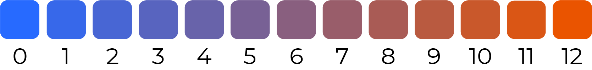

In this experience of moving through each data point from 1st person perspective, audience can change their usual 3rd person holistic perspective in understanding the data, and feel the information instead of analyzing it from afar.
number of times the fridge was open
